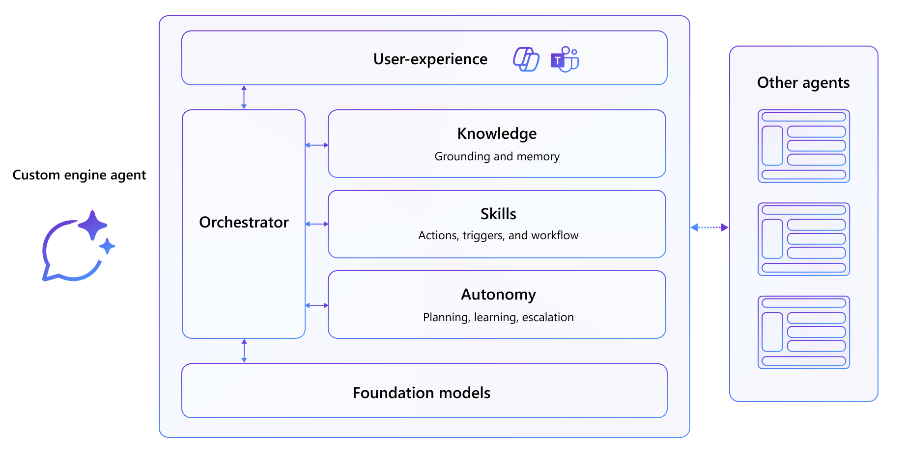

Build Custom Engine Agents
You own the model, the orchestration, and the grounding
A custom engine agent is your agent, end to end. You choose the foundation model, you write the reasoning loop, and you decide exactly which data it reasons over — delivered right inside Microsoft Teams and Microsoft 365 Copilot.
What Is a Custom Engine Agent?
A custom engine agent is an agent you build in code and host yourself. You bring the intelligence; Microsoft 365 provides the surface your users already work in.
This is the right choice when you want a specific foundation model, a reasoning loop tailored to your business process, your own retrieval and grounding stack, or delivery to channels beyond Microsoft 365.

| Layer | What you control |
|---|---|
| Model | Any foundation model you deploy — in Microsoft Foundry or elsewhere. |
| Orchestration | The reasoning loop, tool calling, and multi-step planning, powered by Microsoft Agent Framework. |
| Knowledge | Your retrieval stack: Foundry IQ knowledge bases, Microsoft 365 content, or your own data sources. |
| Channel | Microsoft Teams, Microsoft 365 Copilot, and other channels through the Microsoft 365 Agents SDK. |
The Microsoft 365 Agents SDK handles hosting, activities, streaming, and channel delivery. Microsoft Agent Framework powers the AI: agents, sessions, tools, and grounded responses. Together they let you ship a production-shaped agent without rebuilding the plumbing.
Who This Is For
Two paths. One framework. Pick your starting point.
Both paths land in the same place — an agent running in Microsoft Teams and Microsoft 365 Copilot — but they start from different ends.
Start in the portal if you want to shape the agent's instructions and knowledge visually in Microsoft Foundry first, then wire it into a .NET host. Start in code if you would rather clone a working solution and build capabilities into it feature by feature.
Path 1 — Start with Microsoft Foundry
"I want to design my agent in the portal, then bring it into Microsoft 365."
Create and ground an agent in Microsoft Foundry, then connect it from a Microsoft 365 Agents SDK host using Microsoft Agent Framework so it streams grounded, cited answers into Microsoft Teams and Microsoft 365 Copilot.
You will build:
- A Foundry agent grounded on your own documents
- A .NET host that resolves and runs that agent with Microsoft Agent Framework
- Streaming responses with citations, conversation memory, and delivery to Microsoft 365 Copilot
Path 2 — Start with Agent Framework
"I want to build the agent in code and add grounding myself."
Build the Zava Insurance claims agent from a working starter solution, then ground it twice: first on enterprise search with a Foundry IQ knowledge base, then on Microsoft 365 content with the Microsoft 365 Copilot Retrieval API.
You will build:
- A tool-calling claims agent running in Microsoft Teams and Microsoft 365 Copilot
- Foundry IQ grounding over claims data in Azure AI Search
- Work IQ grounding over policy documents stored in SharePoint
Start Here: Choose Your Path
Your first custom engine agent is a few labs away.